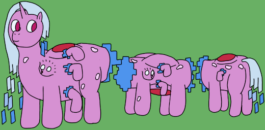

| Source | Adaptation to reality tampering |
| Durability | 10/10 |
| Strength | Physical: 4/10 Psionic: 5/10 Magical: 3/10 Tapestral: 8/10 |
| Specials | Warped puppet creation Alteration of reality |
| Personality | Variable; tends towards wiliness |
Warped Archons come about as the result of an Archmother tampering with reality. They do not typically operate under the conventional rules of psionics or magic, instead directly warping and rewriting reality to achieve their goals. They also spawn similarly warped puppets to aid in these abilities, as a single archon is not particularly effective in any kind of significant-scale edit.
Warped Archons are very unusual Archons, seemingly having more in common with an unusual puppet type than any of their hierarchical siblings. They are quite a bit shorter than a normal archon at 6' 1" (185cm), with inordinately long, centipedal bodies, comprising an elongated barrel with thirty pairs of legs (sixty legs total). However, more often than not, much of their bodies lie in planes of reality outside of their home (or anchor) plane, leading to their more distinctive appearance of three segments with two pairs of legs each. This allows them to explore other realities even when otherwise occupied in their home plane, and it is seldom that a Warped Archon withdraws all of its body into one space.
As Archons, Warped Archons primarily exist to increase the speed of growth of a puppet clan. Amidst their peers, they are above average thanks to the sheer size of their bodies and the number of spawning orifices they have. Curiously, however, none of their orifices ever spawn more than one pupa at a time. They also possess the ability to take temporary psionic control of other puppets (though they of course cannot supersede the will of the Archmother, even among the puppets the archon itself has spawned), though they are not especially good or bad at such coordination.
Warped Archons' most crucial ability is that of modifying the nature of reality around them, having all the tools to isolate an area for modification, and actually perform the modifications they need. While this does allow a singular Warped Archon to be a rather effective independent unit, their lack of specialization means that they are not especially well-suited to more complicated or grandiose edits, instead being better at adjusting their local area.
With a greater independence than normal puppets, Warped Archons can display a considerable variety of behaviour depending on the individual's temperament. They do, however, tend towards somewhat wily and erratic behaviour, driven by an insatiable curiosity that comes with wanting to explore the nature of reality. While not inherently wicked, their nature as reality warping creatures occasionally leads to dangerous or unsettling outcomes.
Warped Archons are similar to Mechanized Archons in that, while their range of puppets is small, they replace all normal puppets at a percentage chance (roughly 30% likelihood). Warped puppets all serve a purpose in the roles of adjusting reality, though there is some significant division of labor. The full list is:
Warped Archons have very unusual code, with several of their genes being written in nonstandard nucleotides. While this seemingly has little effect on the Archon's ability to interact with the rest of their siblings, it does explain their particularly quirky natures.
It is a strange feeling to know that my children will unconditionally support me, even if I begin to lose myself. I try to keep my kindness about me, but at some point the scale begins to become strangely intoxicating. Expansion and development become an obsession I have to mediate rather than a drive to keep going.
I do not lament the Warped Archons for aiding in that ambition; in fact, it is possible to operate them very safely with some gentle pushes in the right direction. Many of them are outright capable of creating safe bubbles of reality to test more potentially dangerous theorums. It is reassuring to know that even with such power, I am capable of keeping myself in check.
Warped Archons are heavily inspired by Stellaris' Cosmogenesis crisis path, and indeed they were first conceptualized as part of a Hyacinth-themed mod for that game. Hence all the talk about warping reality and such. Still, I didn't want them to feel too far out of place with Hyacinth's tendency towards gentleness and kindness, hence the softening of their edges from deranged scientists to something more like reckless children.
